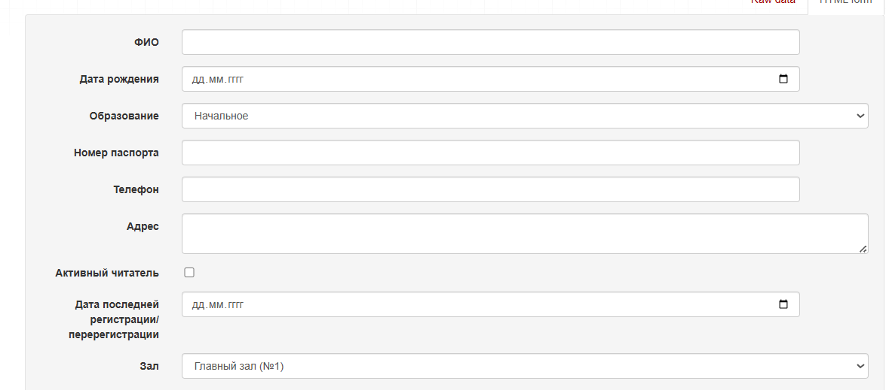
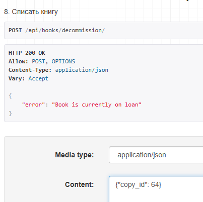
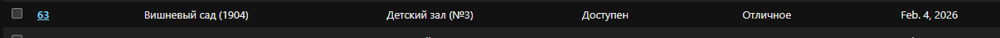
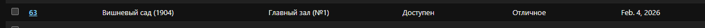
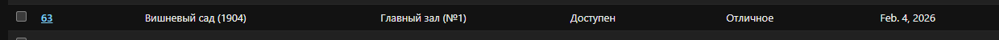
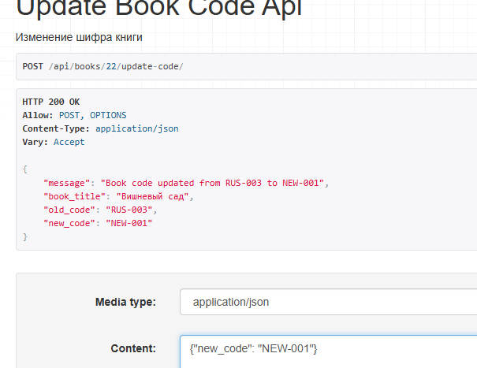

Лабораторная работа 3. Реализация серверной части на django rest. Документирование API.
Цель
работы: овладеть практическими навыками реализации серверной части (backend) приложений средствами Django REST framework.
Вариант 2: Библиотека
Создать программную систему, предназначенную для работников библиотеки. Такая система должна обеспечивать хранение сведений об имеющихся в библиотеке книгах, о читателях библиотеки и читальных залах.
Для каждой книги в БД должны храниться следующие сведения: название книги, автор (ы), издательство, год издания, раздел, число экземпляров этой книги в каждом зале библиотеки, а также шифр книги и дата закрепления книги за читателем. Книги могут перерегистрироваться в другом зале.
Сведения о читателях библиотеки должны включать номер читательского билета, ФИО читателя, номер паспорта, дату рождения, адрес, номер телефона, образование, наличие ученой степени.
Читатели закрепляются за определенным залом, могут переписаться в другой зал и могут записываться и выписываться из библиотеки.
Библиотека имеет несколько читальных залов, которые характеризуются номером, названием и вместимостью, то есть количеством людей, которые могут одновременно работать в зале.
Библиотека может получать новые книги и списывать старые. Шифр книги может измениться в результате переклассификации, а номер читательского билета в результате перерегистрации.
Библиотекарю могут потребоваться следующие сведения о текущем состоянии библиотеки:
- Какие книги закреплены за заданным читателем?
- Кто из читателей взял книгу более месяца тому назад?
- За кем из читателей закреплены книги, количество экземпляров которых в библиотеке не превышает 2?
- Сколько в библиотеке читателей младше 20 лет?
- Сколько читателей в процентном отношении имеют начальное образование, среднее, высшее, ученую степень?
Библиотекарь может выполнять следующие операции:
- Записать в библиотеку нового читателя.
- Исключить из списка читателей людей, записавшихся в библиотеку более года назад и не прошедших перерегистрацию.
- Списать старую или потерянную книгу.
- Принять книгу в фонд библиотеки.
Необходимо предусмотреть возможность выдачи отчета о работе библиотеки в течение месяца. Отчет должен включать в себя следующую информацию: количество книг и читателей на каждый день в каждом из залов и в библиотеке в целом, количество читателей, записавшихся в библиотеку в каждый зал и в библиотеку за отчетный месяц.
Проектирование БД в соот с ТЗ

Для книг (Book + CopyOfBook)
- Название книги -
Book.title - Автор(ы) -
Author+BookAuthor(связь M:M) - Издательство -
Book.publisher - Год издания -
Book.publication_year - Раздел -
Book.section - Шифр книги -
Book.inventory_code
- Число экземпляров в каждом зале - считается через
CopyOfBookпоbook_idиhall_id - Книги могут перерегистрироваться в другом зале - изменение
CopyOfBook.hall_id - Шифр книги может измениться - изменение
Book.inventory_code
- Библиотека может получать новые книги - добавление в
BookиCopyOfBook - Списывать старые -
CopyOfBook.decommission_date+Book.is_in_catalog - Дата закрепления за читателем -
LoanRecord.issued_at
Для читателей (Reader)
- Номер читательского билета -
Reader.library_card_id - ФИО читателя -
Reader.full_name - Номер паспорта -
Reader.passport - Дата рождения -
Reader.birth_date - Адрес -
Reader.home_address - Номер телефона -
Reader.phone_number
- Образование, наличие ученой степени -
Reader.education_level - Закрепление за определенным залом -
Reader.hall_id - Могут записываться и выписываться -
Reader.is_active_member
- Могут переписаться в другой зал - изменение
Reader.hall_id - Номер читательского билета может измениться - изменение
Reader.library_card_id
Для читальных залов (ReadingHall)
- Номер зала -
ReadingHall.hall_number - Название -
ReadingHall.name - Вместимость -
ReadingHall.capacity
Для операций библиотекаря
- Какие книги закреплены за заданным читателем? -
LoanRecord+Book - Кто из читателей взял книгу более месяца тому назад? -
LoanRecord.issued_at - За кем из читателей закреплены редкие книги (≤2 экз.)? -
CopyOfBook+LoanRecord - Сколько читателей младше 20 лет? -
Reader.birth_date - Процент читателей по образованию -
Reader.education_level
- Записать нового читателя - INSERT в
Reader - Исключить неактивных -
Reader.last_registration_at> 1 года - Списать книгу -
CopyOfBook.decommission_date - Принять книгу в фонд - INSERT в
Book/CopyOfBook
Для отчетов
- Количество книг и читателей по залам -
CopyOfBook+Reader+ReadingHall - Количество читателей, записавшихся за месяц -
Reader.first_registered_at
Ограничения значений полей
Возможные значения:
- available - доступен
- on_loan - выдан
- reserved - зарезервирован
- decommissioned - списан
Возможные значения:
- excellent - отличное
- good - хорошее
- fair - удовлетворительное
- poor - плохое
- damaged - поврежден
Возможные значения:
- primary - начальное
- secondary - среднее
- higher - высшее
- degree - ученая степень
Реализация серверной части приложения средствами Django и Django REST Framework
1. Реализация логики работы API средствами Django REST Framework
1.1. Использование методов сериализации (как в Практической 3.1, пункты 4-6)
Для преобразования данных моделей Django в формат JSON и обратно были использованы сериализаторы Django REST Framework:
# serializers.py
from rest_framework import serializers
from .models import *
class AuthorSerializer(serializers.ModelSerializer):
class Meta:
model = Author
fields = '__all__'
class BookSerializer(serializers.ModelSerializer):
class Meta:
model = Book
fields = '__all__'
class ReaderSerializer(serializers.ModelSerializer):
class Meta:
model = Reader
fields = '__all__'
read_only_fields = [
'library_card_id',
'first_registered_at',
'reader_id'
]
extra_kwargs = {
'is_active_member': {'default': True},
}
Объяснение:
- Использован ModelSerializer для автоматической генерации полей на основе модели
- fields = '__all__' включает все поля модели в сериализацию
- read_only_fields определяет поля, которые нельзя изменять через API
- extra_kwargs позволяет задать дополнительные параметры для полей
1.2. APIView классы (из практической 3.2)
Для реализации сложной бизнес-логики были использованы классы APIView:
# views.py
from rest_framework.views import APIView
from rest_framework.response import Response
class ReaderBooksAPIView(APIView):
"""1. Какие книги закреплены за заданным читателем?"""
def get(self, request, pk):
try:
reader = Reader.objects.get(pk=pk)
loans = LoanRecord.objects.filter(reader_id=reader, returned_at__isnull=True)
# ... обработка данных
return Response({
'reader': serializer.data,
'books': books
})
except Reader.DoesNotExist:
return Response({'error': 'Reader not found'})
Объяснение:
- APIView предоставляет гибкий способ создания представлений
- Методы get(), post() соответствуют HTTP-методам
- Используется Response для возврата данных в формате JSON
- Обработка исключений обеспечивает надежность API
1.3. Generic классы (из практической 3.2)
Для стандартных операций CRUD использованы Generic классы:
from rest_framework import generics
class BookListAPIView(generics.ListAPIView):
"""Список книг"""
serializer_class = BookSerializer
queryset = Book.objects.filter(is_in_catalog=True)
class RegisterReaderAPIView(generics.CreateAPIView):
"""6. Зарегистрировать нового читателя"""
serializer_class = ReaderSerializer
Объяснение:
- ListAPIView для получения списка объектов
- CreateAPIView для создания новых объектов
- Минимальный код + автоматическая валидация и сериализация данных
1.4. Работа с Django ORM (из Практической 3.1)
Для выполнения запросов к базе данных использованы методы Django ORM:
# Примеры запросов из разных эндпоинтов:
# Фильтрация с Q-объектами
books = CopyOfBook.objects.filter(
hall_id=hall,
received_date__lte=current
).exclude(
Q(decommission_date__lte=current) |
Q(availability_status='decommissioned')
).count()
# Агрегация и аннотация
stats = []
for level_code, level_name in Reader.EDUCATION_CHOICES:
count = Reader.objects.filter(
education_level=level_code,
is_active_member=True
).count()
percentage = (count / total) * 100 if total > 0 else 0
# Сложные цепочки фильтров
overdue_loans = LoanRecord.objects.filter(
issued_at__lt=month_ago,
returned_at__isnull=True
)
Объяснение:
- Использованы filter(), exclude() для выборки данных
- Применены Q-объекты для сложных условий
- Агрегация (count(), sum()) для статистических вычислений
- Цепочки методов для построения сложных запросов
2. Реализованные эндпоинты API
2.1. Пять GET-запросов информации для библиотекаря:
GET /api/reader/<int:pk>/books/(http://127.0.0.1:8000/api/reader/20/books/) - 1. Какие книги закреплены за заданным читателем?
Дополнительно исп. серриализатор для вывода всей инфы о читателе.
Ответ
{ "reader": { "reader_id": 18, "library_card_id": "Б-26-0001", "full_name": "Иванов Иван Иванович", "birth_date": "2000-05-15", "education_level": "higher", "passport": "1234 567890", "phone_number": "+7 (123) 456-78-90", "home_address": "г. Москва, ул. Ленина, д. 1", "is_active_member": true, "first_registered_at": "2026-02-04", "last_registration_at": "2025-08-08", "hall_id": 12 }, "books": [ { "title": "Война и мир", "author": "Лев Толстой", "issued_at": "2026-01-01", "due_date": "2026-01-25" }, { "title": "Война и мир", "author": "Лев Толстой", "issued_at": "2026-01-10", "due_date": "2026-02-14" } ] }
GET /api/loans/overdue/(http://127.0.0.1:8000/api/loans/overdue/) - 2. Кто из читателей взял книгу более месяца тому назад?
Выведет читателя и его id с просроченными книгами (+ id экземпляра)
Ответ
{ "overdue_readers": [ { "reader_id": 18, "reader_name": "Иванов Иван Иванович", "book_title": "Война и мир", "issued_at": "2026-01-01", "days_overdue": 34 }, { "reader_id": 23, "reader_name": "Смирнов Дмитрий Петрович", "book_title": "Анна Каренина", "issued_at": "2025-12-20", "days_overdue": 46 } ] }
GET /api/readers/rare-books/(http://127.0.0.1:8000/api/readers/rare-books/) - 3. За кем из читателей закреплены редкие книги (≤2 экз.)?
Сначала находим все книги с двумя или меньше доступными экземплярами, аннотируя каждую книгу количеством её копий. Затем для каждой такой редкой книги находим читателей, у которых есть активные выдачи этих книг, и возвращаем информацию о них.
GET /api/readers/young/(http://127.0.0.1:8000/api/readers/young/) - 4. Сколько в библиотеке читателей младше 20 лет?
Через фильтрацию по дате рождения и возвращает их количество вместе с детальной информацией в сериализованном виде.
Код
class YoungReadersAPIView(APIView): """4. Сколько в библиотеке читателей младше 20 лет?"""
def get(self, request):
twenty_years_ago = date.today() - timedelta(days=20 * 365)
young_readers = Reader.objects.filter(
birth_date__gt=twenty_years_ago,
is_active_member=True
)
serializer = ReaderSerializer(young_readers, many=True)
return Response({
'count': young_readers.count(),
'readers': serializer.data # для сокращения кода
})
GET /api/stats/education/(http://127.0.0.1:8000/api/stats/education/) - 5. Сколько читателей в процентном отношении имеют начальное образование, среднее, высшее, ученую степень?
Ответ
{ "total_readers": 5, "stats": [ { "education": "Начальное", "count": 2, "percentage": 40.0 }, { "education": "Среднее", "count": 0, "percentage": 0.0 }, { "education": "Высшее", "count": 3, "percentage": 60.0 }, { "education": "Ученая степень", "count": 0, "percentage": 0.0 } ] }
2.2. Четыре POST-операции библиотекаря:
POST /api/reader/register/(http://127.0.0.1:8000/api/reader/register/) - 6. Записать в библиотеку нового читателя

-
POST /api/readers/remove-inactive/(http://127.0.0.1:8000/api/readers/remove-inactive/) - 7. Исключить из списка читателей людей, записавшихся в библиотеку более года назад и не прошедших перерегистрацию -
POST /api/books/decommission/(http://127.0.0.1:8000/api/books/decommission/) - 8. Списать старую или потерянную книгу
Для удаления нужно ввести id экземпляра (через браузер {"copy_id": 64}). В случае если книга в данный момент выдана вернется исключение.

POST /api/books/add/(http://127.0.0.1:8000/api/books/add/) - 9. Принять книгу в фонд библиотеки
2.3. Дополнительные эндпоинты (не прописаны, но упомянуты в варианте):
-
GET /api/reports/monthly/(http://127.0.0.1:8000/api/reports/monthly/) - Отчет о работе библиотеки за месяц -
POST /api/copies/transfer-hall/(http://127.0.0.1:8000/api/copies/transfer-hall/) - Перемещение книги между залами (Книги могут перерегистрироваться в другом зале)

 

POST /api/books/<int:pk>/update-code/(http://127.0.0.1:8000/api/books/20/update-code/) - Изменение шифра книги (Шифр книги может измениться в результате переклассификации)

2.4. Вспомогательные эндпоинты:
GET /api/books/(http://127.0.0.1:8000/api/books/) - Список всех книг в каталогеGET /api/readers/(http://127.0.0.1:8000/api/readers/) - Список активных читателейGET /api/copies/(http://127.0.0.1:8000/api/copies/) - Список доступных экземпляров книг
3. Архитектура приложения
library_project/
├── library_app/
│ ├── models.py # Модели данных
│ ├── serializers.py # Сериализаторы DRF
│ ├── views.py # Представления (APIView + Generic)
│ └── urls.py # Маршрутизация API
├── library_project/
│ ├── settings.py # Настройки Django + DRF + Djoser
│ └── urls.py # Основные URL-маршруты
└── db.sqlite3 # База данных
Подключить регистрацию / авторизацию по токенам / вывод информации о текущем пользователе средствами Djoser.
Подключить регистрацию / авторизацию по токенам
INSTALLED_APPS = [
...
'djoser', # подкл djoser пункт 5
'rest_framework.authtoken', # покл авторизацию по токенам
]
urlpatterns = [
...
path('auth/', include('djoser.urls')),
path('auth/', include('djoser.urls.authtoken')), # покл url адреса для работы с токенами
]

Получение токена
Эндпойнт /auth/token/login/ (Token Based Authentication)

Запрос и получение информации о пользователе**
Для того чтобы показать серверу, что мы именно этот user нужно отправить ему полученный токен серверу вместе с запросом который выполняем

Заключение
Эта лабораторная работа позволила применить знания из практических работ и реализовать серверную часть приложения для библиотеки средствами Django. Была создана модель базы данных согласно варианту, и на её основе, а также по заданиям из варианта, были реализованы требуемые эндпоинты: некоторые из них были простыми (generic), логику других пришлось разрабатывать отдельно. Также я познакомилась с инструментом тестирования API Postman. Запросы я в основном тестировала в браузере, но потом попробовала и через Postman. Кроме того, с его помощью была настроена регистрация и получение токена средствами djoser.